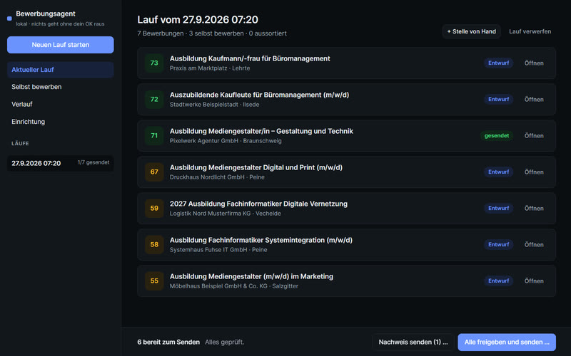
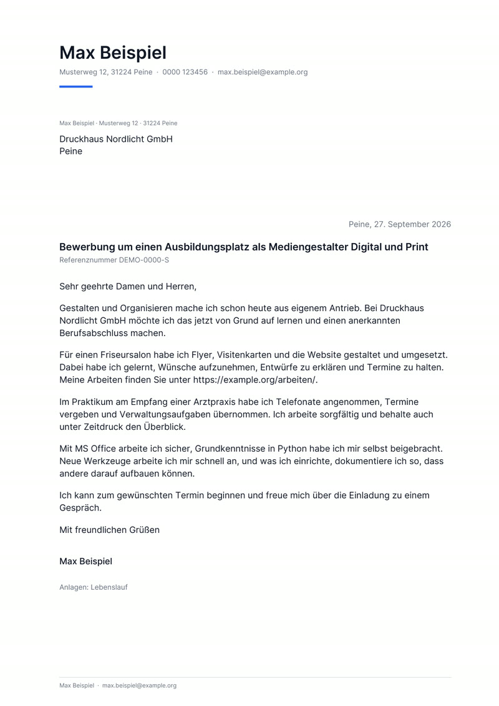

KI — 2026
Bewerbungsagent
Ein lokaler Agent, der Ausbildungs- und Stellenangebote der Arbeitsagentur durchsucht, passende Anschreiben als PDF erzeugt und nichts verschickt, bevor ein Mensch wörtlich SENDEN eintippt.

Überblick
Der Bewerbungsagent liest die öffentliche Jobsuche der Bundesagentur für Arbeit, filtert nach Profil, Umkreis und gefordertem Schulabschluss, bewertet die Passung und schreibt je Stelle ein einseitiges Anschreiben. Eine lokale Oberfläche zeigt alle Entwürfe mit PDF-Vorschau; von dort gehen die Bewerbungen per E-Mail raus, dazu ein Bewerbungsnachweis als PDF.
Die Aufgabe
Viele Bewerbungen pro Woche kosten Stunden: Anzeigen lesen, Adressen suchen, Anschreiben anpassen, alles nachweisen. Gleichzeitig darf ein Automat nie etwas an Firmen schicken, das niemand gelesen hat — und eine Adresse im Anzeigentext heißt noch lange nicht, dass dort Bewerbungen erwünscht sind.
Der Ansatz
Der Agent übernimmt die Fleißarbeit, der Mensch die Entscheidung. Er darf suchen, lesen und schreiben, aber nicht senden. Senden gibt es nur in der Oberfläche und nur nach getipptem Bestätigungswort — auch über den MCP-Server, an den sich Claude oder andere Agenten anbinden, lässt sich keine Mail auslösen.
Das System
Python mit Standardbibliothek für Oberfläche und Server, fpdf2 für die PDFs nach DIN 5008, SMTP für den Versand. Die Texte schreibt wahlweise ein lokales Modell über LM Studio oder Claude über MCP. Ein eigener Prüfschritt erkennt aus dem Anzeigentext, ob eine Adresse nur für Rückfragen dasteht oder ein Bewerbungsportal verlangt wird. Jede Stelle landet als Notiz im Obsidian-Wissensspeicher.
Das Ergebnis
61 automatische Tests, darunter ein Versand an einen lokalen Test-Mailserver. Beim Lesen von 27 echten Anzeigen wollten 7 keine Mail-Bewerbung, obwohl eine Adresse im Text stand — genau diese Fälle fängt der Agent jetzt ab. Die Bilder zeigen eine Vorführung mit erfundenen Daten.
